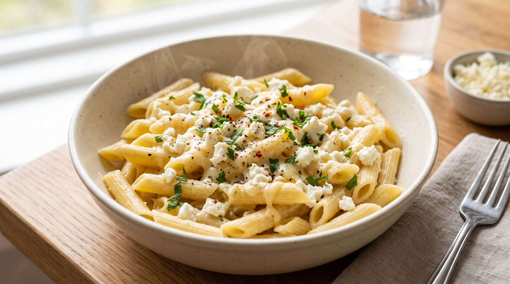

Mac and Cheese

Description
This classic homemade mac and cheese is creamy, rich, and ultimate comfort food.
Elbow macaroni is coated in a smooth, velvety cheddar cheese sauce that comes
together in just a few minutes on the stovetop.
It is a quick and easy dish that both kids and adults love. Perfect for busy weeknights
when you want something warm, delicious, and satisfying without spending hours in the kitchen!
Ingredients
- 8 oz (225g) elbow macaroni
- 1/4 cup unsalted butter
- 1/4 cup all-purpose flour
- 2 cups whole milk
- 2 cups sharp cheddar cheese, shredded
- 1/2 teaspoon salt
- 1/4 teaspoon black pepper
- 1/4 teaspoon paprika (optional)
Steps
- Cook the elbow macaroni in a large pot of boiling salted water according to package instructions. Drain and set aside.
- In a saucepan, melt the butter over medium heat. Whisk in the flour and cook for about 1 minute until smooth.
- Gradually whisk in the milk until fully combined and smooth. Cook, stirring constantly, until the sauce thickens.
- Remove the saucepan from heat and stir in the shredded cheddar cheese, salt, pepper, and paprika until melted.
- Add the cooked macaroni to the cheese sauce and stir well to coat all the pasta evenly.
- Serve hot and enjoy immediately!
Home